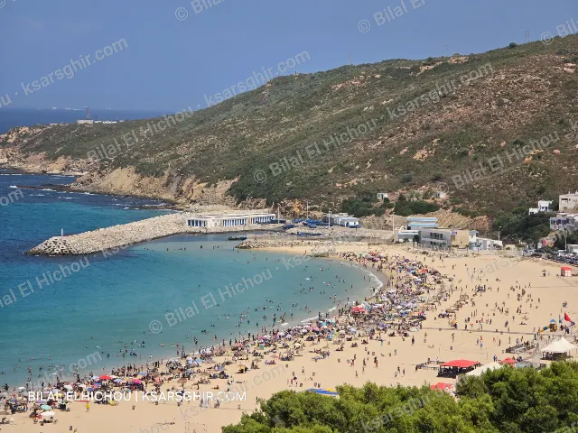

🏖️ شواطئشاطئ الداليةالقصر الصغير الآن
مرحباً بك في القصر الصغير
القصر الصغير بلدة ساحلية في إقليم الفحص أنجرة، على بعد حوالي 35 كيلومتراً شرق طنجة، مطلة مباشرة على مضيق جبل طارق. من شاطئها ترى الساحل الإسباني في الأيام الصافية، والبواخر تعبر المضيق طوال اليوم.
حولها شواطئ لكل ذوق: الدالية باللواء الأزرق، وسيدي قنقوش بخدماته وأنشطته، وخلجان هادئة للعائلات مثل الدهداه وزرارع وواد المرسى. وعلى بعد دقائق ميناء طنجة المتوسط، والموقع الأثري في قلب البلدة، وقرية بليونش تحت جبل موسى.
في هذا الدليل نجمع لك ما تحتاجه لزيارة القصر الصغير: وصف كل شاطئ وميناء وموقع تاريخي، وحالة البحر يومياً، ومواعيد البواخر، والأرقام المهمة، بصور ومعلومات من ابن المنطقة.
أحدث المواضيع
كل الوجهات السياحية📚 من الدليل
كل الدليلخريطة الوجهات
كل الشواطئ والمواقع حول القصر الصغير. اضغط على نقطة لتفتح الموضوع.
تحميل الخريطة…
🏖️ شواطئ⚓ موانئ🌿 طبيعة🏛️ تاريخ وآثار
معرض الصور
لقطات من عدسة بلال الهيشو


خدماتنا
77Kمتابع على Facebook
16+وجهة سياحية
4لغات